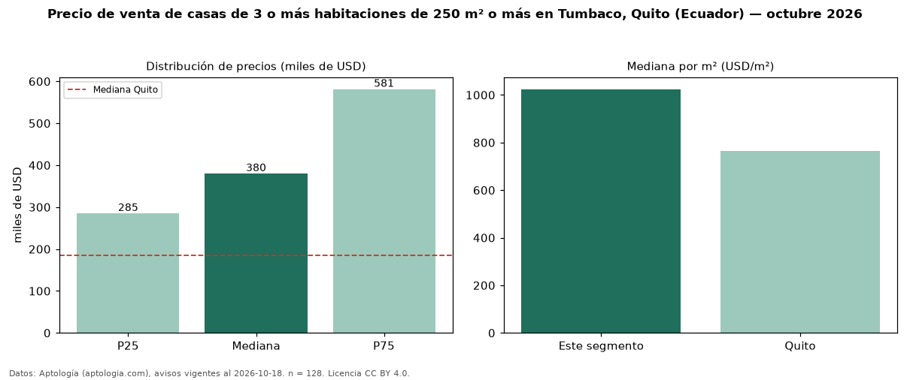

Precio de venta de casas de 3 o más habitaciones de 250 m² o más en Tumbaco, Quito (Ecuador) — octubre 2026
USD 380.000 es el precio mediano de casas de 3 o más habitaciones de 250 m² o más en venta en Tumbaco, Quito (Ecuador) (n = 128 avisos). Eso es 74 % más que la mediana de las casas de 3 o más habitaciones en venta de Tumbaco (USD 219.000, n = 336); este segmento reúne el 38 % de esos avisos. Por metro cuadrado, la mediana es USD 1.024/m² (n = 128), 4 % por debajo de las casas de 3 o más habitaciones en venta de Tumbaco (USD 1.070/m²). El área mediana anunciada es 357 m². La mitad central de los avisos va de USD 285.000 a USD 581.250 (razón 2,0), una dispersión alta. La mediana de todas las casas en venta de Quito es USD 185.000 (+105 % de diferencia). Datos: Aptología (aptologia.com), CC BY 4.0 — https://www.aptologia.com/ec/venta/quito/tumbaco. Archivos: PDF, CSV con las cifras y gráfica PNG.

| Avisos únicos | 128 |
|---|---|
| Percentil 25 | COP 285.000 |
| Mediana | COP 380.000 |
| Percentil 75 | COP 581.250 |
| Mediana por m² | COP 1.024 |
Fuente: avisos vigentes de portales inmobiliarios recopilados por Aptología, deduplicados (mínimo 30 avisos únicos por celda). Precios pedidos, no cerrados. Fecha: 2026-10-18.